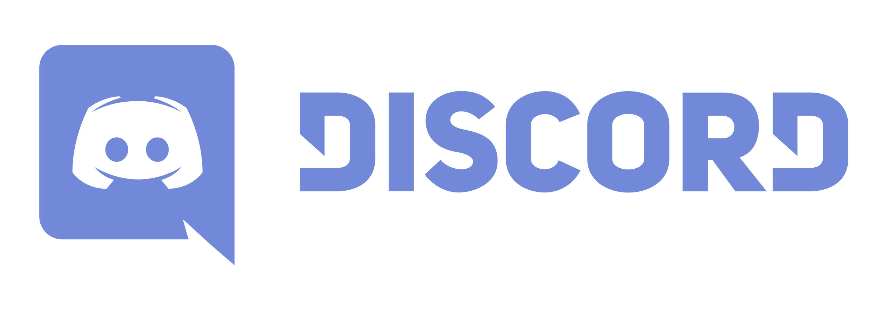

Neal Magee, Ph.D.
Solution Architect, Research Computing
University of Virginia, Fall 2021
In order to go farther and deeper this Fall, here are five suggestions of how you might prepare over the summer, if you have the time and inclination. These are optional suggestions, but will give you an ability to do more and go further in CS4740 this fall. Some you may have under your belt already, or you may just want to pick one to focus on.
Learn the Linux shell and do not be afraid of it.
We will be using the AWS command-line tools, scripting in bash, and will consume and generate plenty of JSON and YAML. Be familiar with curl, httpie, or wget to fetch remote objects or interact with APIs. Bonus: Learn how to use jq.
Learn a basic Linux package manager such as apt, yum, or apk.
You will create and delete many instances in this course, and how to “bootstrap” an instance automatically upon creation. This means loading software, and that means a package manager. One great way to practice this is with Docker (see below).
Know how to work in Python3.
Be familiar with how to create virtual environments using pipenv, how to install dependencies, and manage local files, env variables, etc. within your code. Python2 will not be accepted. Python in this course will interact with cloud infrastructure, so a proper understanding
of error handling and exceptions is useful.
Bonus: Create an AWS account of your own and start working with the boto3 library.
Understand source control using Git
And know how to collaborate on repositories within GitHub. You should
be familiar with initializing a repo, adding + committing + pushing code, branches, and pull requests. Be familiar with
how to interact with Git/Github from within your favorite IDE. Bonus: Learn Github actions, such as how to build, test, and deploy your code automatically.
Learn the basics of Docker.
Know how to pull, create, and run containers. This course will rely upon
containerized deployments but will expect you to understand the basics of various run commands, port and volume
mappings, environment variables, and commands.
One remnant of COVID online teaching that I am going to retain is a course discord server. If you use Discord already you’ll be familiar with the concept – if not, create a free account and join our server. You’ll pick it up easily. This will be a useful place for links, quick updates, and Q&A.
Click the image below to join:
